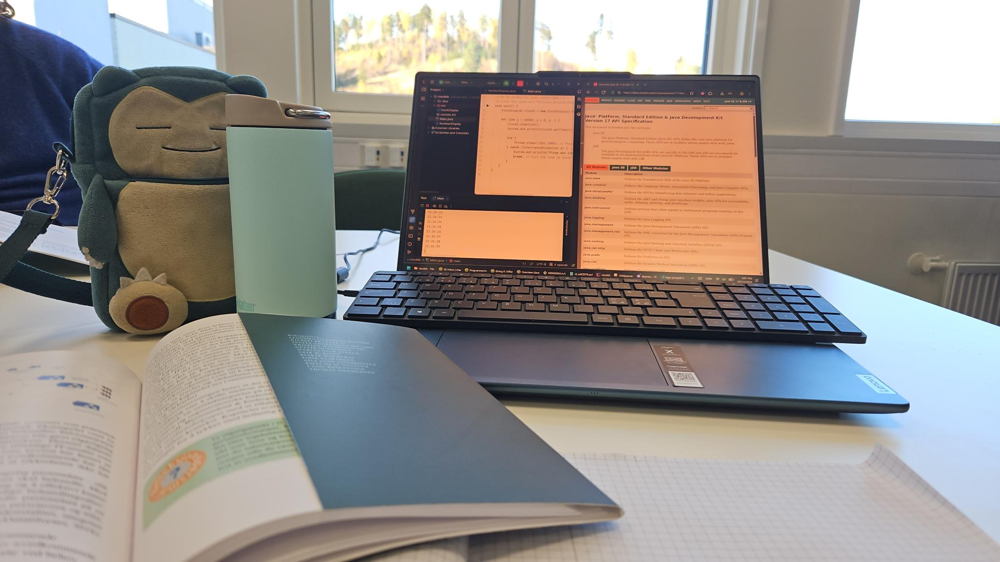
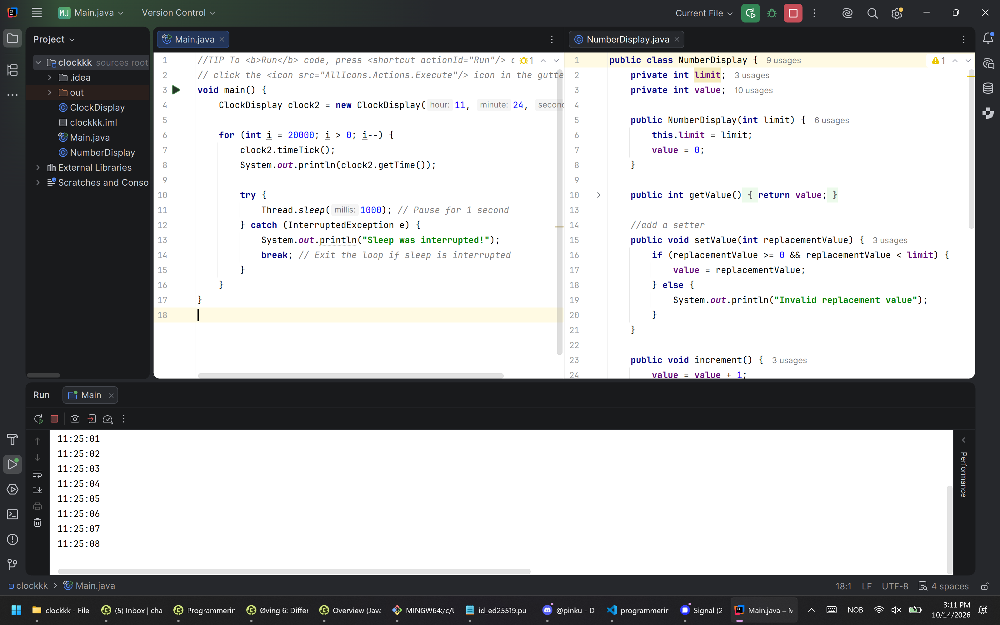

Objekt Orientert Programming
I Programmering 1 har vi brukt Java for å lære Object Orientert Programmering. Vi har hatt obligatoriske oppgaver der vi går igjennom teori. Og vi har arbeidet med oppgavene i boka Objects First with Java A Practical Introduction Using BlueJ for å skrive egen kode og utfordre oss selv.


Hva har jeg lært?
Ved å bruke ferdigbrukte klasser og forklaringene i boka har jeg lært hvordan man kan skrive enkel Java med OOP logikk. I arbeidslivet er all kompetanse innenfor et felt eller programmeringsspråk. Dersom man kommer i en stilling der Java er brukt vil jeg ha en head start med tekniske ferdigheter.